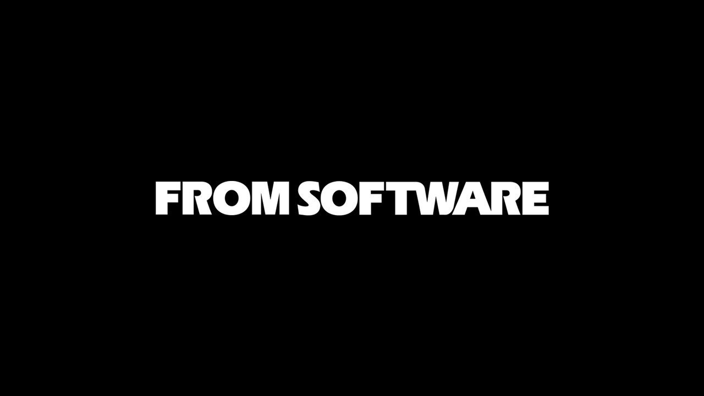

Uma obra-prima do gênero Action RPG que redefiniu os padrões do mundo aberto

A FromSoftware é um estúdio japonês fundado em 1986, responsável por franquias lendárias como Dark Souls, Sekiro e Bloodborne. Com Elden Ring, a empresa deu seu maior passo: um mundo aberto gigantesco sem abrir mão da profundidade e do desafio que tornaram seus jogos cultuados.
O diretor Hidetaka Miyazaki colaborou com George R.R. Martin — autor de As Crônicas de Gelo e Fogo — para criar a lore das Terras Intermédias.
Martin criou a história primordial das Terras Intermédias — os eventos que ocorreram antes do início do jogo. A Rainha Marika, os Semideuses, a Noite da Ruptura.
A colaboração resultou em um universo com profundidade literária raramente vista em games, onde cada item e descrição carrega camadas de significado escondido.
Elden Ring venceu o prêmio de Jogo do Ano no The Game Awards 2022, além de dezenas de outros prêmios da crítica especializada ao redor do mundo.
Em menos de 2 anos do lançamento, Elden Ring vendeu mais de 25 milhões de cópias, tornando-se o jogo mais vendido da FromSoftware em toda a sua história.
O primeiro jogo de mundo aberto da FromSoftware. As Terras Intermédias cobrem uma área enorme, com masmorras, cavernas, castelos e segredos em cada canto do mapa.